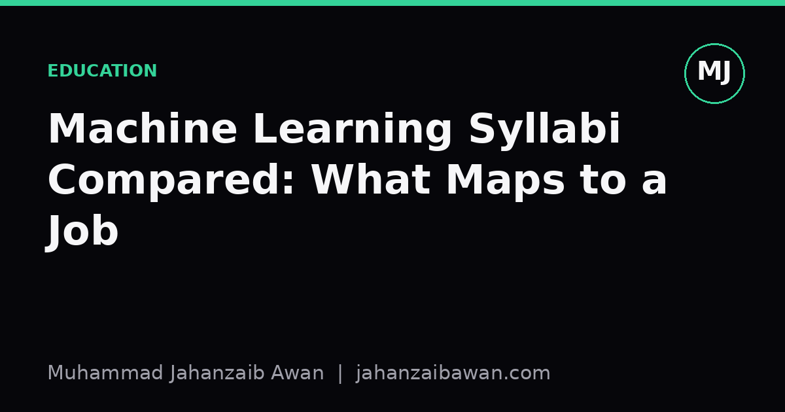

Machine Learning Syllabi Compared: What Maps to a Job
I lined up the usual course topics against what actually gets used on the job and found a gap worth planning around.

The syllabus shape most courses share
If you line up several machine learning course outlines side by side, a pattern appears fast. Week one is usually linear regression and the bias-variance trade-off. Then come decision trees, support vector machines, a neural networks unit that grows a bit each year, and somewhere near the end a nod to unsupervised learning and maybe reinforcement learning. Evaluation metrics get a lecture, sometimes two, usually early, before anyone has built a model complicated enough for the metrics to matter.
This ordering makes pedagogical sense. You cannot discuss precision and recall meaningfully until students have a classifier to apply them to, so metrics come first as definitions, then get revisited as an afterthought once the interesting models arrive. The problem is that this ordering trains a habit: build the model, then check if it worked, rather than the other way round. In a job, the sequence is almost always evaluation design first, model second, because the evaluation design determines whether the model's score means anything at all.
I have sat through assignments where the brief is essentially: here is a dataset, train a model, report accuracy. That is a reasonable exercise for learning an algorithm, but it rewards a skill that barely exists in practice, namely picking a model family that fits a tidy, already-split, already-cleaned dataset. The skill that actually gets used at work is closer to: here is a pile of records with timestamps and a specific person who will be annoyed if your number is wrong, go and work out whether your evaluation even measures the thing they care about.
Where the gap actually bites: splits and leakage
Take a concrete case. A syllabus exercise on customer churn might hand you a CSV, tell you to do an 80/20 train-test split with a fixed random seed, and ask for an F1 score. Students get this right almost every time because scikit-learn's train_test_split makes it one line of code. But a random row-wise split on customer data is often a leak in disguise. If a single customer appears multiple times across rows, say once per billing cycle, a random split puts some of their rows in training and others in test, and the model learns to recognise the customer rather than to generalise the pattern of churn. Your F1 of 0.86 on the held-out set might collapse to something closer to 0.55 once it meets a genuinely new customer next quarter.
The fix, grouping by customer ID before splitting, or better, splitting by time so that training data precedes test data chronologically, is not hard to code. It is maybe five extra lines. But it requires recognising that the split itself is a modelling decision, not a formality to get through before the real work starts. Few syllabi spend time on this because it does not fit neatly into a lecture about an algorithm. It is a lecture about data provenance, and provenance is unglamorous.
I would guess that leakage of this kind, through duplicated entities, through features that encode the future, through preprocessing fitted on the full dataset before the split, causes more quietly wrong production numbers than any choice of model architecture. A simple logistic regression evaluated with a correct, leakage-aware split will beat a tuned gradient boosted model evaluated with a careless one, because the second number is not measuring generalisation at all. Courses that spend three weeks on gradient boosting and twenty minutes on split design are optimising for the wrong bottleneck.

Strong baselines and the cost of skipping them
The second gap is baselines. A typical assignment asks you to beat a given benchmark score, which is useful, but it rarely asks you to construct your own baseline from first principles and defend why it is the right one. On the job, before anyone lets you deploy a neural network, you will usually be asked what a trivial rule gets you. Predict the majority class. Predict last month's value. Use a simple weighted average of the last three periods for a forecasting task. These baselines are not busywork, they set the floor that justifies the extra complexity, cost, and maintenance burden of a fancier model.
Here is a worked version. Suppose you are forecasting weekly sales for a retail product and your gradient boosted model achieves a mean absolute percentage error of 12 percent on the test period. That sounds respectable until you check that a naive seasonal baseline, simply repeating the same week's value from the previous year, achieves 13 percent. You have spent weeks of engineering time, added a dependency on a model that needs retraining and monitoring, and bought one percentage point of improvement. Whether that trade is worth it depends entirely on the business context, but you cannot make that judgement if nobody built the naive baseline in the first place.
Courses rarely teach this because a naive baseline is not intellectually interesting to lecture about. There is no derivation, no architecture diagram. But the habit of starting every project with the dumbest defensible model, then measuring every subsequent increment of complexity against it, is one of the most transferable skills from any ML education into an actual job. It is cheap to teach and expensive to skip.
What to add if the syllabus will not
If you are working through a course right now, or choosing one, I would weight your self-study time differently from the official structure. Spend real time on how train-test splits interact with grouped, temporal, or hierarchical data, not just the default random split. Build the habit of writing a naive baseline before touching a sophisticated model, and reporting both numbers together, every time, even in coursework where nobody asked for it. Treat evaluation metric choice as a modelling decision tied to a real cost, not a formality after the fact; ask what a false positive and a false negative actually cost in the scenario you are given.
None of this requires abandoning the syllabus. The algorithms you learn, regression, trees, neural networks, are genuinely useful and worth the lecture time they get. The gap is not in what is taught but in what is assumed: that evaluation is easy and baselines are optional. Treat those two things as first-class material you teach yourself alongside the course, and the distance between your coursework and an actual job shrinks considerably.